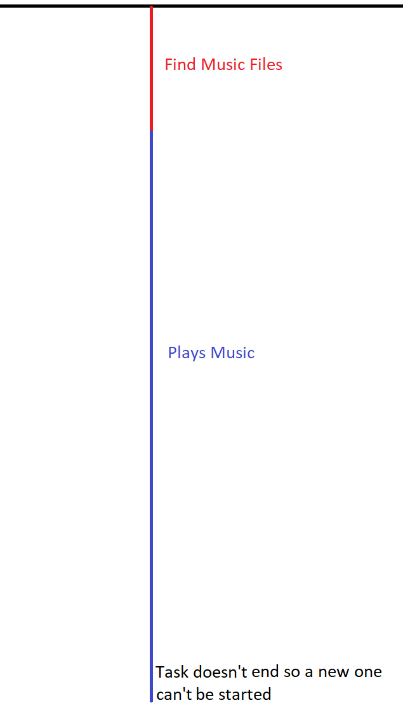

Make a Simple Command Line Music Player With C# #3
Last time we ended with the program choosing the songs that it found in the order that it found them in, and I asked you to try to make it choose the song randomly. Don’t worry, if you did work it out we are about to add that feature. In this tutorial, we are also going move the part that plays the music and checks if a song has finished to a second thread for reasons that will become clear shortly. So now that we know what we are going to do in this tutorial lets jump right into it.
First let’s add a simple random selection method.
...
private static int RandomSong()
{
return new Random().Next(0, musicPath.Count);
}
...
We have added the random selector into its own method so that we can easily reuse it whenever we like. Now this method is different from the others as it returns a value of type int, unlike our other method that returns void. We tell the compiler that we want to return an int by adding the keyword int after the static keyword. We are using int because the method is being used to directly select an index from the musicPath array, as Lists only accept an object of type int as an indexer it is just easiest to make the method return an int instead of a float and then casting to an int.
Now let’s add this into the program and whilst we are at it, make the program run forever.
First let’s add a simple random selection method.
static void Main(string[] args)
{
GetPaths();
while (true)
{
player.URL = musicPath[RandomSong()];
player.controls.play();
while (true)
{
Thread.Sleep(2000);
if (player.controls.currentPosition == 0)
break;
}
}
Console.ReadLine();
}
Here we have made the program endless by encasing the song selection within a while true loop. Then once the song is chosen it is continuously checked as to if it has finished. This works as while loops are evaluated from the inside out, meaning that the innermost loop must be completed before the outer can continue. This lets us make a loop within a loop, which is called nesting, with the outer loop selecting the song and the inner checking if it has finished as the outer loop will not choose another song until its inner loop is complete, or in this case broken out of.
We can also remove the console.readline as the program will never reach there. This is because, as described before, it is perpetually stuck in the while loop. Because the outer while will never stop, the program will not reach the end of the Main method, meaning that the console window cannot close.
Why is the while loop infinite?
A while loop will run wlist the expression within the () has a boolen value of true, as the value we have input is always true then the loop will be infinite as there is also no way to break out of the loop
Now before we move on we should move this into its own method.
static void Main(string[] args)
{
GetPaths();
PlaySong()
}
...
private static void PlaySong()
{
while (true)
{
player.URL = musicPath[RandomSong()];
player.controls.play();
while (true)
{
Thread.Sleep(2000);
if (player.controls.currentPosition == 0)
break;
}
}
}
You may now be wondering why we have moved the selection and playing of a song into its own method. Well is so we can add threading to the program.
Threading is a very powerful tool that can be used to help speed up programs and it can also be used to make a program do multiple things at once. However, this is something that must be used with caution. It can cause many problems with your program if they are not used correctly, mostly steaming from data shared between threads. Anyway, threads work by allowing our program to do more than one thing at once. as demonstrated in this diagram:
On the left we have a program only running on one thread, with each colored line representing task. As you can see with only 1 thread each task must wait until the previous is finished before starting. This means that it will take longer for the program to complete all 5 tasks, in this example it takes 20 seconds.
On the right, we see the same program running on 5 threads with each task having its own thread. As you can see all the tasks can start and run simultaneously because each of them is running on its own thread. This means that the shorter tasks don’t have to wait for the longer tasks to complete, meaning that the time taken for the program to finish is only the length of the longest task, In this case 10 seconds.
An example of this program running is below, however with a shorter time period for the tasks.
As you can see the first set of 5 tasks represents a single threaded program, currently our program, must do each in turn and the second set of tasks is the 1 task per thread version and as you can see this dramatically reduces the execution time. Once a task has finished another can also be started in its place as threads can be started and finish at the same time as shown here.
Now this is all great but what does it have to do with our music player?
Well currently our program runs like this:

As you can see the playing music task never ends so a new one can’t be started. Well what is the problem with this?
This means that if the user of example wanted to change the volume of the song currently playing they couldn’t as we couldn’t start a new task to get users input and change the volume. So, what we want to do this something like this:
This will get the files, then start a new task to play the music and as the thread that found the files task is complete we can use it to check for user input via Console.ReadLine() as that will return to the program whatever the user input as a string, so then we can use that string as commands for the program, for example pause, skip, volume, etc.
What does Thread.Sleep() actually do?
It will cause the current thread to not be scheduled for execution for the ammout of time specified. This means that the procesessor will not execute the thread for the next X milliseconds where X is the ammout of time passed in as the method argument.
How do threads/multi-threading work?
With systems that use a single processor multi-threading us mostly implemented via time sliceing, this means that the processor flips between different threads. This is called context switching and mostly happens fast enough for humans to precive that the tasks are running in parallel. This however, is not true multi-threading as the different threads are not running actually running at the same time, but it works and most of the time the user will percive the threads as running symoultaniously.
On a multiprocessor/multi-core system multiple threads can run in parallel, with every core running a different thread at the same time. On each of the cores in a multi-core processor a single core approach will be taken.
It should be noted that threads differ from a muti-tasking operating system as:
- processees are often independantm where as threads are a subset of a process
- process carry more state information than threads, with multiple threads within a process sharing states as well as memory and other resources
- processes have a seperate address spaces, where as threads share
- process can only interact through system provided communicatin mechanisms
- context switching between threads in the same process as typically faster than context switching between processes
Here are lots of links and further reading:
Stack Overflow: Multi-threading, how do concurrent threads work?
Wikipedia: Thread (Computing)
Wikipedia: Multithreading (Computer Architecture)
Wikipedia: Computer Multitasking
Wikipedia: Time Sliceing
Wikipedia: Context Switching
Wikipedia: Address Space
Wikipedia: Inter-Process Communication
Wikipedia: Multiprocessing (multiprocessor)
Wikipedia: Multi-Core Processor
Now that we have talked about what threads are and why we need them lets go an implement them into our program.
using WMPLib;
using System.Threading;
...
private static WindowsMediaPlayer player = new WindowsMediaPlayer();
private static Thread musicThread;
...
static void Main(string[] args)
{
GetPaths();
musicThread = new Thread(() => PlaySong());
musicThread.Start();
Console.ReadLine();
}
So here we are adding a new thread variable and naming it musicThread. After the music files have been found musicThread is assigned to a new thread object and the thread object is give then argument of the PlaySong function. But what does () => mean?
That is a lambda expression, this allows you to create an anonymous method that will be called when the thread is started. It is useful if we had the PlaySong method taking in an argument because if you do not use a lambda expression you must write the new thread object like this:
new Thread(PlaySong);
As you can see here we treat PlaySong as it if was a variable this mean that we cannot pass in any argument values to it.
As this:
new Thread(Foo(bar));
Does not work.
However, when we use a lambda expression we can pass in argument values as we can type the () the and end of the method name since it is treat as method and not a variable. So, if you wanted to input an argument you would do:
new Thread(() => Foo(bar));
Now we have moved our PlaySong method into its own thread lets make the code a bit nicer.
private static void PlaySong()
{
player.URL = musicPath[RandomSong()];
player.controls.play();
Thread.Sleep(50);
while (true)
{
if (player.controls.currentPosition == 0)
{
player.URL = musicPath[RandomSong()];
player.controls.play();
Thread.Sleep(50);
}
}
}
All we have done here is remove the outer while loop and reduced the sleep time to in my opinion make the code more readable, you dont have to do this if you dont want to.
Anonymous Methods
In earlier version of C# this did not exist and the only way to make a method/delegate was to use a named method (the normal way of makeing a method/varibale). However in C# 2.0 Amonymous methods were introduced, this allowed method blocks to be defined inline this allowed for things like this:
delegate int Foo(int x);
Foo f = delegate(int y) { return y * y; };
This would then be called by typeing
f(10);
This is fine and good but dosent seem very practical so here is a more practical example:
delegate void NumberChanger(int n);
public static void AddNum(int p)
{
Console.WriteLine($"Named Method: {10 + p}");
}
public static void MultNum(int q)
{
Console.WriteLine($"Named Method: {10 * p}");
}
public static int GetNum()
{
return 10;
}
static void Main()
{
//create delegate instances using anonymous method
NumberChanger nc = delegate(int x)
{
Console.WriteLine($"Amonymous Method: {10 + p}");
};
//calling the delegate using the anonymous method
nc(10); //prints 10
//instantiating the delegate using the named methods
nc = new NumberChanger(AddNum);
//calling the delegate using the named methods
nc(5); //prints 15
//instantiating the delegate using another named methods
nc = new NumberChanger(MultNum);
//calling the delegate using the named methods
nc(2); //prints 20
}
As you can see this is very useful as it gives you a way to assign your methods to varibales. The nc variabls allows all both of the names methods to be assigned to it as when declared it requires a method with a signature of int. As both of the named methods have that signarute they can both be assigned. This is a very powerful tool especial then used with somethign like events, here is a link to TutorialsPoint on events: C# - Events
Makeing an anonymous delegate can also reduce codeing overhead as you can just instantiate a delegate as apposed to creating a seperate method for something that may only take one or two lines, an example of this can be seen on the MSDN linked below.
For more information on ananymous methods see the MSDN here: MSDN: Anonymouse Methods (C# Programming Guide)
More on Lambda Expressions
A lambda expression is a type of anonymous function introduced on C# 3.0, they are also rather useful for writing LINQ query expresions, something that I will cover later or here is a link to MSDN on LINQ: LINQ: .NET Language-Intergrated Query
with a lambda expression you place the input paramaters in the left and then the expression on the right. As shown here:
x => x*x;
this says that the paramater is named x and will return a value of x2. You can then assign this to a delegate type or do whaterver else you want with it. The => also has the same precident as = and it is also right associative (goes from right to left) like the = operator.
You can slo reate an expression lambda. This is what we have done in our code cand is defined by typeing () before the => operator. This allows for multiple arguments to be passed into the lammba expression, it requires none, two, or more arguments to be contained within the () to be a valid expression.
Fore more information on Lambdas see the MSDN here: MSDN: Lambda Expressions (C# Programming Guide)
Now that we have moved PlaySong to another thread the Main thread of the program is finished once the new thread is started. And once the Main threads finished a program will close we now need to re-add the Console.ReadLine() to the end the Main method like so:
static void Main(string[] args)
{
GetPaths();
PlaySong()
Console.ReadLine();
}
Now that we have talked a lot about threads and lambda expressions you have probly had quite enough of my ramblings so we will end this tutorial here. Next time we will add the user control to the program but if you are feeling adventures you could go ahead and add it yourself then compare my implementation to yours, and try to understand where the differences came from.
Anyway, hope you enjoyed this 3rd installment of the tutorial and hope to see you next time.
Back To Collection | Previous | Next